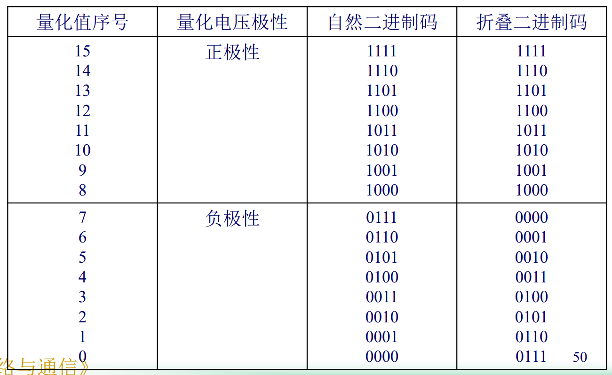
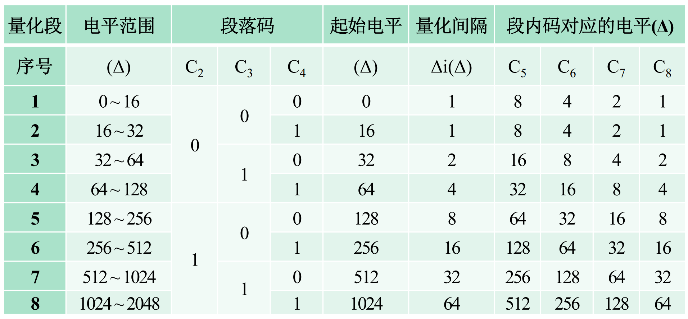
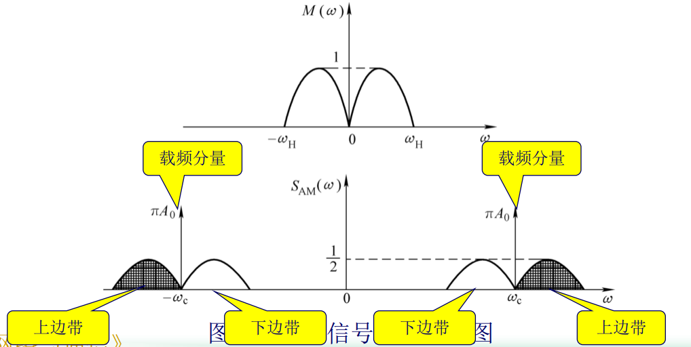
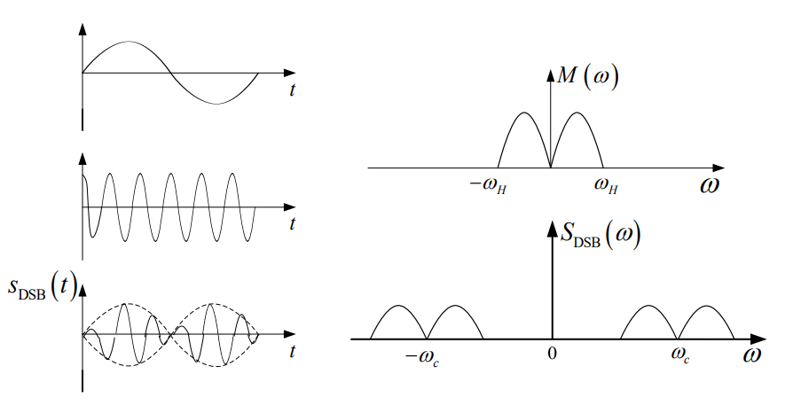
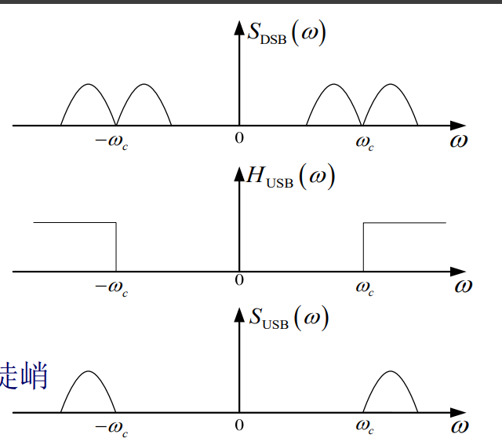
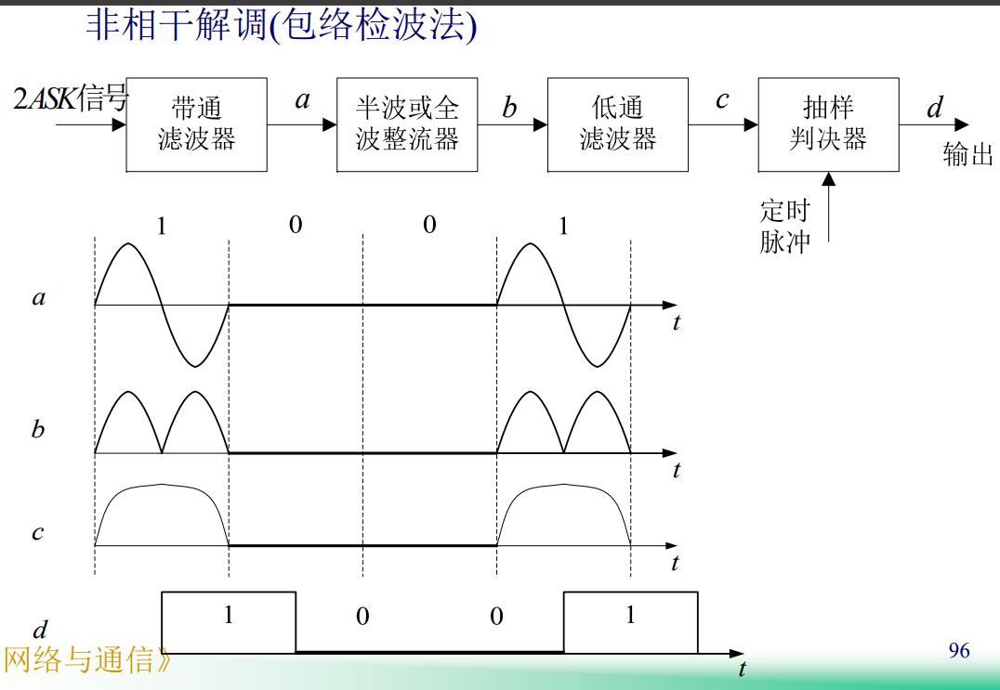
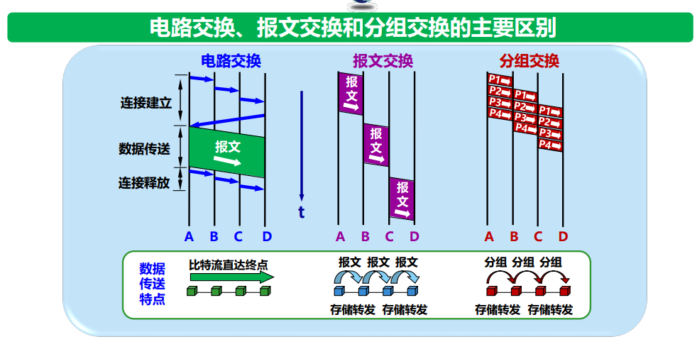
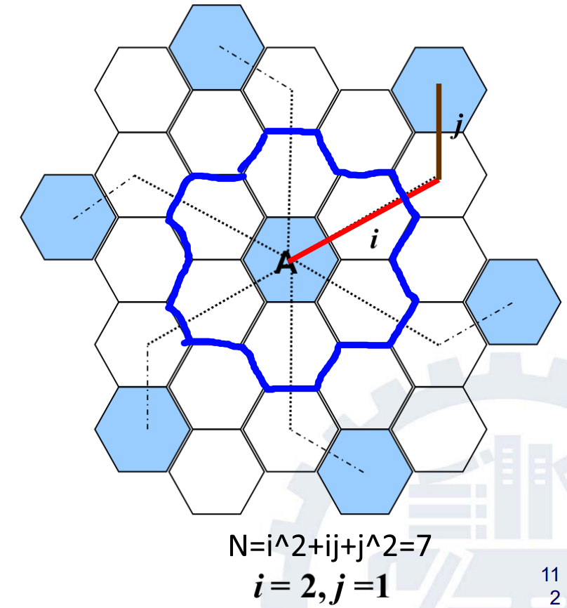

复习
概念
Chapter 1
- 现代通讯基本特征：数字化
- 现代通讯基础：微电子技术
数字信号噪声不积累
信息技术：
- 从信息功能方面：是解放、扩展人信息功能的技术
- 从物理概念方面：是研究完成信息采集、加工、处理、传递、再生和控制的技术
信息技术四基元：感测技术、通信技术、智能技术、控制技术
移动通信常见技术
- 2.5G：CDMA（码分多址）
- 4G：OFDM（正交频分复用）
Chapter 2
通信目的：有效可靠地获取、传递和交换消息中所包含的信息
消息：多种表现形式。表述的是客观物质、主观思维的运动状态或存在状态
信息定义：
- 消息中所包含的有效内容
- 是事物运动的状态、方式。是一种资源，可共享、重复使用，不受时间空间限制。具有特殊性、广泛性、实效性、时效性
- 香农的信息定义：信息是事物运动状态或存在方式的不确定性的描述
信号是消息的载体

各种通信系统中，传输的形式是消息。消息传递过程特点：收信者在收到消息以前不知道消息的具体内容。通信就是消除不确定性的过程
通信：利用电信号传递消息中所包含的信息
通信系统：完成通信过程所需的电子设备和信道总体
消除多少不确定性就得多少信息量。
傅里叶变换有关：
- 周期信号频谱是离散谱
- 非周期信号是连续频谱，傅里叶级数变为傅里叶积分
- 连续非周期的时间函数对应连续非周期频谱
- 离散非周期序列函数（指间隔一定）对应周期的连续函数
- 连续周期对应非周期离散序列函数
噪声：
- 按来源
- 人为噪声
- 自然噪声
- 按性质分类
- 脉冲噪声：突发性地产生幅度大、持续时间短、间隔时间长的干扰
- 窄带噪声：非所需的连续已调正弦波，例如幅度恒定的单一正弦波
- 起伏噪声（白噪声）：时域频域内都普遍存在的随机噪声。起伏噪声是一种高斯噪声。高斯噪声指概率密度函数服从高斯分布。
信息处理：
- 提高系统有效性：信源编码。可通过A/D变换变为数字信号，然后进行压缩编码等
- 提高系统安全性：密码
- 提高系统可靠性：信道编码
Chapter 3
A/D变换现在最常用脉冲编码调制（PCM）。包括：
- 抽样：把时间连续的模拟信号转换成时间离散、幅度连续的抽样信号
- 量化：把时间离散、幅度连续的抽样信号，转换为时间、幅度均离散的信号
- 编码：将量化后信号编码形成二进制码组输出。（量化与编码同时完成，即量化在编码过程中实现的）
在接收端进行对应D/A变换：
- 解码（译码）：编码的反过程，将接受到的PCM信号还原成抽样信号（实际为量化值，与抽样值存在量化误差）
- 低通滤波器：恢复、重建原始的模拟信号，可看做抽样的反变换
脉冲有四个参量：
- 重复周期
- 脉冲振幅
- 脉冲宽度
- 脉冲相位（位置）
一般重复周期由抽样定理决定，所以可以调制其他三个参量（均为模拟调制）：
- 脉冲振幅调制PAM
- 脉冲宽度调制PDM
- 脉冲位置调制PPM
将抽样值划分为M个区间，每个区间用一个电平表示，则有M个离散电平，称为量化电平。这种用M个量化电平表示连续抽样值的方法称为量化。分为：
- 均匀量化
- 非均匀量化
产生的误差称为量化误差
均匀量化中，小信号信噪比小，所以可以采用非均匀量化。先经过压缩（即经过一个类似\(\sqrt x\)形状的函数，压缩后放大小信号，压缩大信号），再均匀量化
我国采用A率及对应13折线法，对其他国家，采用\(\mu\)率及15折线法
A率压缩：
x为压缩器归一化输入电压，y为压缩器归一化输出电压，A为常数，决定压缩程度。实际中，选A=87.6
实际中用13折线近似A率。在第一象限，\(x\in [0,1]\)，从0向右，按照[0,1]中七个点\(\frac 1 {128}, \frac 1{64}, \dots, \frac 1 2\)，将区间划为8段，每段斜率如下：
| 折线段号 | 1 | 2 | 3 | 4 | 5 | 6 | 7 | 8 |
|---|---|---|---|---|---|---|---|---|
| 斜率 | 16 | 16 | 8 | 4 | 2 | 1 | 1/2 | 1/4 |
原点所在的第一段是过原点的直线，其后依次相接。然后再进行原点对称，第三象限也有了相应曲线。第一、三的第1、2段折线，共四段，共线，所以一共有13段折线。
\(\mu\)压缩率：
通常取\(\mu =255\)。将\(y\in [0,1]\)按长度\(1/8\)划分为8段，\(x\in [0,1]\)按7个点\(\frac 1 {255}, \frac 3 {255}, \frac {15} {255}, \dots, \frac {127}{255}\)划分为8段，对应点连接形成曲线。然后原点对称。两个象限的第1段形成一条直线，共15条折线
小信号最好用15折线，大信号最好用13折线
折叠码：除了最高位，其余位上下对称。优点：双极性电压可以采用单极性编码方法处理，简化编码电路与过程；误码对小电压影响小，对小信号有利

13折线的码位安排：
第一位表示极性正负（负为0，正为1），后七位表示量化值绝对值。三位段内码表示8种斜率段落，其余四位表示在段内的16个均匀划分的量化电平。一共能表示256个电平（包含正负）。将最小量化间隔\(1/2048 = \frac1{128} \times \frac 1 {16}\)称为一个量化单位\(\Delta\)

编码电路：
- 极性判别器：确定信号极性
- 整流器：PAM信号经过后变为单极性信号
- 保持电路：在整个比较过程中保持输入信号的幅度
- 比较判决器：是核心，通过比较样值\(I_s\)和标准值\(I_w\)进行非线性量化和编码。\(I_s>I_w\)时得到1，否则得到0
- 本地解码电路：产生比较判决器所需的标准值。包含记忆电路、7/11变换电路、11位线性解码电路
- 7/11电路是将7位非线性幅度码\(C_2\sim C_8\)变换为11位线性幅度码\(B_1\sim B_{11}\)，直接将其对应电平转换为二进制，补全11位即可
非线性码的码字电平（编码电平）\(I_C\)：
其中\(I_{Bi}\)为段落码对应段落起始电平，\(\Delta_i\)表示该段落内量化间隔。注意编码电平是量化值的最低电平，比量化电平低\(\Delta_i/2\)
线性码码字电平表示为\(I_{CL}\)
解码器：包含7/12变换电路，保证了最大量化误差不超过\(\Delta_i / 2\)，人为补上半个量化级\(\Delta_i / 2\)。解码器输出的解码电平（即量化电平）\(I_D\)：
解码器输出的解码电平与样值之差称为解码误差（即量化误差）。输出12位码为11位码末尾加上一个1（表示最后还有半个单位）
图像压缩编码技术：
- 预测编码：常见使用差分编码调制（DPCM），利用邻近像素之间的相关性来压缩数码率，去除图像间数据的空域冗余度、时间冗余度
- 变换编码：利用变换域参数分布特征实现压缩编码
- 熵编码：去除信源的统计冗余，不会引起信息损失，又称为无损编码。常见有游程长度编码、霍夫曼编码
信源编码：
- 按码字长度：
- 定长码
- 变长码
- 按是否会映射到相同码符号序列
- 非奇异码：所有码字都不相同
- 奇异码：一定不是唯一可译码
- 唯一可译码：只能被唯一地译成所对应的信源符号序列
- 按是否即时可译：
- 非即时码：必须要等下一个码字开始接受后才能判断是否可以译码
- 即时码：译码时无需参考后续的码符号就能立刻做出判断。要求任意一个码字都不能是其他码字的前缀部分。任意即时码可以用树状图表示
霍夫曼编码非唯一。为了使码长方差更小，应该让合并得来的概率尽量处于更高的位置（有其他符号的概率与其相等时）。霍夫曼编码一定是最佳码
Chapter 4
信息传输就是将携带信息的信号通过媒体传送到目的地的过程
光纤由中心的纤芯与外层的包层组成。原理为光的全反射。奠基者：高锟、霍克哈姆。常用三个波段中心：850nm、1300nm、1550nm。带宽大，通信容量大
无线传输信道：
- 地波：功率大，大地表面材质影响大。频率限制在低频、中频；大气条件影响小，理论上可用于世界上任何两地的长距离通信
- 空间波
- 直射波
- 地面反射波
- 天波：靠电离层反射。受大气影响大
模拟传输技术基础：
- 基带模拟传输系统：未经过调制（频率变换）
- 高频窄带模拟传输系统：经过调制。过程：调制信号、载波、已调信号、解调（检波）
调制后的信号可以在特定信道中传输。便于减小天线尺寸，方便无线发射；利于多路复用；扩展信号带宽，提高抗干扰能力等
载波调制：用调制信号去控制载波的参数的过程：
- 调幅AM：用电信号f(t)调制载波信号C(t)的振幅\(A_0\)的调制技术
- 调频FM：用电信号f(t)调制载波信号C(t)的角频率\(\omega_0\)的调制技术
- 调相PM：用电信号f(t)调制载波信号C(t)的相位\(\theta_0\)的调制技术
后两者称为非线性调制，因为不再是原调制信号频谱的线性搬移，而是频谱的非线性变换，会产生与频谱搬移不同的新频率成分。抗噪声性能强
调频AM：

结构简单易实现，适用广播通信。缺点：功率效率非常低，频谱效率不高，为信号最高频率的两倍（主要由f(t)中的直流分量，导致频谱中的冲击造成）。带宽为基带信号的两倍
抑制载波双边带调幅DSB
先将f(t)中的直流分量滤除，即可得到DSB信号。频谱中无冲击

调频效率100%，但不能用包络检波，需要相干检波，较复杂。带宽仍然为基带信号的两倍
单边带调幅SSB
双边带信号两个边带中任意一个都包含了调制信号频谱的所有频谱成分，因此只需要传输其中一个即可。可用滤波法或相移法产生。
滤波法：\(S_{SSB}(\omega) S_{DSB}(\omega) \cdot H(\omega)\)，其中\(H(\omega)\)为高通滤波器。难点：边带滤波器的制作，因为很难做到具有陡峭的截止特性
例：上边带频谱SSB（类似的，可以得到下边带频谱）

残留边带频谱VSB
为SSB、DSB的折中。滤波器必须在\(\pm\omega_c\)处必须具有奇对称（关于\(x=\pm\omega_c\)某个点对称），相干解调时才能无失真恢复调制信号
数字基带信号传输。应该满足条件：
- 不含直流，低频分量尽量少
- 应含有丰富的定时信息
- 应具有一定的检错（检测误码）能力
- 设备简单，易于实现
单极性不归零码NRZ：0电平为0,1为V。含有丰富直流与低频分量，所以不适合做基带传输码型，只适合计算机内部、极近距离传输
双极性不归零码：0为-V，1为V。在等概率出现1、0时无直流分量，利于在信道中传输，抗干扰能力强
单极性归零码RZ：0为0,1为V。每个脉冲后都要恢复0（通常占空比为50%）。可以直接提取定时信息
双极性归零码1:0对应-V，1对应V。每个脉冲后都要恢复0。接收端很容易识别出每个码元的起止时刻，便于同步
双极性半占空码AMI（双极性半占空交替反转码）：将双极性归零码的1，变为反复交替的\(\pm V\)。电路简单，且可以检错，AMI-RZ波形可以经过全波整流变为单极性RZ波形，从中提取定时分量。困但连续的0出现时，电平长时间不跳变，造成定时信号提取困难
三阶高密度双极性码HDB3：
- 编码：AMI码的改进（有占空）。连续出现4个以上的0时，每四个0一组，最后0的变为V码。V码正负也交替出现。且V要和其之前第一个1或B码的极性相同。若某个V码在满足极性交替后，与前面的1符号不同，则需要将该组0的第一个改为B码，与该组的V码极性相同
- 解码：若相邻同极性码间连0个数为3，则第一个通信码不变，后面的同性码为V，替换为0.若连0为2，则此两个连0前后均恢复为0
反转码CMI：1码交替用11、00表示，0用01表示。10为禁字不允许出现，可以此判断是否为误码
双相码，Manchester码：每个二进制代码用两个不同相位的二进制新码取代。0用01表示，1用10表示。是一种双极性NRZ波形，在每个码元间隔的中心点都存在电平跳变，含有丰富的定时信息，无直流分量，编码简单。但带宽加倍，频带利用率低
延迟调制吗，密勒码：1用10或01表示。单个0时，码元持续时间内、边界都不跃变（即和左右边界的电平一样）；连0时，最左侧的0电平与左侧电平一致，然后后面交替（00、11交替）。可以用双相码下降沿触发双稳电路得到（即在双相码下降沿时，改变密勒码的电位）
mBnB码：把原信息的m位二进制码分为一组，并置换为n位二进制码组的新码组。如果\(n>m\)，则多出\(2^n - 2^m\)种组合，作为禁用码组，以获得好的编码性能。双相码、密勒码、CMI码都是1B2B码。有良好的同步、检错功能，但带宽增大
四种二进制数字调制方式：
- 二进制幅移键控2ASK。0、1对应的幅度不同。包络检波法（非相干解调）、相干解调法（少用，因为必须提供与载波保持同频同相的相干载波，否则会失真）

- 二进制频移键控2FSK。0、1对应的频率不同：可看做两个不同载频的2ASK信号的叠加。相干解调法、鉴频法（非相干解调）
- 二进制相移键控2PSK。0、1对应的相位不同0、1的绝对相位不同（例如发送1时绝对相位为0，发送0时为\(\pi\)）
- 二进制相对相移键控2DPSK。遇到基带信号1时，载波相位相对前一个码元倒相，相位改变\(\pi\)；遇到0时保持
M-ary 多级调制技术1，也分ASK，PSK、FSK（例如4-ary ASK，就是一段表示两位二进制）
正交幅度调制QAM：\(s(t) = d_1(t) cos2\pi f_c t + d_2(t) sin2\pi f_c t\)。图中点到原点的长度表示幅度，与x正半轴夹角表示相位。有：
- QPSK：四个点
- QAM-16
- QAM-64
Chapter 6
充分利用信道，采用不同多址技术（共用一个信道，用某种方式区分不同用户）：
- 频分多址FDMA：按频率划分频谱
- 频分复用FDM：将多路基带信号调制到不同频率的载波上，再进行叠加形成一个复合信号的多路复用技术。用户在分配到一定频带后，在通信工程中始终都占用这个频带
- 时分多址TDMA：把传递时间分割成周期性的帧，再分为若干个时隙，每个用户收发各使用一个指定时隙，时间上不重叠
- 频分双工FDD：上下行链路的帧结构既可相同也可不同
- 时分双工TDD：通常收发在相同频率上，一帧中一半时隙用于移动站发送，另一半用于移动站接收
- 时分复用TDM（等时信号）：将时间划分为一段段等长的时分复用帧，每一个时分复用的用户在每一个TDM帧中占用固定序号的时隙。容易造成线路资源浪费（例如某用户暂时无数据发送）
- 统计时分复用STDM：动态地按需分配共用信道的时隙
- 码分多址CDMA：以不同的相互正交的码序列来区分用户并建立多址接入。用户信号经过扩频处理，再经载波调制后发送出去。接收机会收到完整码，但不能解出其他用户的码。抗干扰能力强，频谱类似白噪声
- 码分复用：每个站的码片不同，且与其他站的码片规格化内积为0；每个码片向量与该码片向量自己的规格化内积为1.通过计算发送的码片序列和所有站的码片的规格化内积即可得到发送数据。算出1表示发送1，-1发送0,0表示未发送
- 扩频浪费带宽，但抗干扰、多径失真，信号隐秘，多用户共用相同较宽带宽而几乎没有相互干扰
- 为现在无线通信中主要的多址手段
- 空分多址SPMA：让同一个频段在不同空间内得到重复利用
卫星通信系统包括：发端地面站、上行线、通信卫星、下行线、收端地面站。覆盖面积大，通信距离远。设站灵活，通信容量大，电路费用与通信距离无关。但要求卫星严格，有高可靠性、寿命长，通信地球站设备较复杂、庞大，信号有延迟
轨道分类：
- 按形状
- 椭圆轨道
- 圆轨道
- 按倾角
- 赤道轨道，倾角为0
- 极地轨道，倾角为90
- 倾斜轨道
- 按轨道周期
- 回归/准回归轨道（星下点轨迹重复）
- 非回归轨道（星下点轨迹不重复）
- 按高度
- 低轨道LEO
- 中轨道MEO
- 高轨道HEO
- 静止轨道GEO、缺点：容纳卫星数量有限，高纬度地区通信效果差，延迟大
蜂窝移动通讯：采用六边形小区。可以在中心（中心激励）或者三个不相邻顶点建设基站（顶点激励，可避免辐射阴影）
簇：一组同频，且距离相等且为最大的小区
从一个小区到另一个小区时会发生硬切换、软切换：
- 硬切换：先切断再通信
- 软切换：切换过程中不需要中断，同时连两个基站。浪费资源
- 接力切换：为两个的折中。上下行链路先后转移到目标小区（先将上行链路切换到目标小区）。能降低切换时延
漫游：移动台在某地登记进网后，可在异地进行同样呼叫处理通信。
Chapter 7
大众熟悉的三大网络：
- 电信网络
- 有线电视网络
- 计算机网络（核心作用，发展最快。目前三网融合，融入现代计算机网络技术）
区分：
- Internet：互联网，全球最大、最重要的计算机网络。基本特点
- 连通性
- 资源共享
- internet：互连网。多个网络通过一些路由器相互联结，构成覆盖范围更大的网络
计算机网络：由若干节点（计算机、集线器、交换机或路由器），与之间的链路组成
发展的三个阶段：
- 1969-1990：单个网络ARPANET向互联网发展
- 1985-1993：建立了三级结构的互联网
- 1993-现在：全球范围多层次ISP结构的互联网
互联网标准化工作：由互联网协会ISOC规定，下面是互联网体系结构研究委员会IAB，IAB下面有互联网研究指导小组IRSG、互联网工程部IESG。标准以RFC形式提起，任何人都可以评论，但RFC只有很少的称为标准。
互联网：
- 边缘部分：由主机组成
- 核心部分：由大量网络和连接这些网络的路由器组成，为边缘提供服务（连通性和交换）。典型交换技术包括：电路交换、分组交换、报文交换
- 电路交换：使用交换机连接每一个电话机，内部进行转接。即动态分配传输线路资源。分为三个阶段：建立连接、通话、释放连接
- 分组交换：采用存储转发。将报文划分为更小的等长数据段，数据段前面添加首部就构成了分组（包，首部也可以叫包头）。分组是互联网中传送的数据单元。发送端依次发送分组，然后接收端剥去首部，还原报文。根据首部包含的地址等信息，由路由器进行转发。路由器动态维护、创建转发表。每个分组独立选择转发路径。高效、灵活、可靠、迅速。但会导致排队延迟、开销大、不保证带宽（动态分配）
- 报文交换：适用于数据量大时。

计算机之间通信的含义：两个主机上的两个进程之间的通信。通信方式：
- Client/Server，即C/S方式
-
Peer to Peer，即P2P
-
按网络作用范围分类：
- 广域网WAN
- 城域网MAN
- 局域网LAN
- 个人局域网PAN
- 按使用者：
- 公用网
- 专用网
接入网AN：用来把用户接入到互联网的网络
开放系统互联参考模型，抽象概念：OSI/RM，失败。TCP/IP协议，成功
协议组成要素：
- 语法：数据与控制信息的结构、格式
- 语义：需要发出何种控制信息，完成什么动作，以及响应
- 同步：事件实现顺序的详细说明
两种形式：
- 文字描述：便于人阅读、理解
- 程序代码：让计算机能够理解
五层协议的体系结构：
- 应用层：DNS、HTTP、SMTP
- 运输层：TCP（传输控制协议。面线连接、可靠的数据传输服务。基本单位为报文段）、UDP（用户数据报协议。无连接的尽最大努力的数据传输服务。传输单位为用户数据报）
- 网络层：IP
- 数据链路层
- 物理层：协议确定插头引脚数量，及如何连接。各种传输媒介（光纤等）在物理层之下
概念：
- 实体：任何可发送、接受信息的硬件或软件进程
- 协议：控制两个对等实体进行通信的规则的集合。实现本层协议需要调用下层提供的服务
服务是垂直的，协议是水平的
服务访问点SAP：同一系统中相邻两层实体进行交互（交换信息）的地方，为抽象概念，是逻辑接口
公式
Chapter 2
消息（符号自信息）\(I(x_i)\)
表示事件\(x_i\)发生前的不确定性，或发生后所含有的信息量。通常，取a=2，此时单位为比特bit。对等概率M禁进制码元，有\(I = log_2(1/P(x))=log_2M\ bit\)，等概率二进制码元为1bit。消除多少不确定性就得多少信息量。
信息熵（平均信息量）\(H(X)\)
单位为bit/符号。表示信源输出后每个离散消息所提供的平均信息量、信源输出前信源的平均不确定度。反应变量的随机性
当离散信源的每一个符号等概率出现时，熵最大，为\(log_2n\)。对连续信息的平均信息量（相对熵）同样有：
带宽
傅里叶级数
其中\(\omega_0=2\pi / T\)为基波角频率。系数确定：
- \(\frac {a_0} 2 = \frac 1 T \int_{-T/2}^{T/2} f(t) dt\)，称为f(t)的均值、直流分量
- \(a_n = \frac 2 T \int_{-T/2}^{T/2} f(t) cos n\omega_0 t dt\)，称为f(t)的第n次余弦波的振幅
- \(b_n = \frac 2 T \int_{-T/2}^{T/2} f(t) sin n\omega_0 t dt\)，称为f(t)的第n次正弦波的振幅
傅里叶变换
两式称为傅里叶变换对，记为
随机变量均值、方差
期望与方差关系：
随机过程定义
定义：随时间变化的无数个随机变量的集合为随机过程
随机过程也是全部样本函数的集合。样本函数\(\xi_i(t)\)是随机过程的一次实现，是确定的时间函数
随机过程\(\xi(t)\)在任意时刻\(t_1\)的值\(\xi(t_1)\)是一个随机变量。随机变量\(\xi(t_1)\)小于等于某值\(x_1\)的概率\(P[\xi(t_1) \leq x_1]\)记作
称之为随机过程\(\xi(t)\)的一维分布函数。若对\(x_1\)偏导存在
称之为随机过程\(\xi(t)\)的一维概率密度函数。一维分布、概率函数仅仅描述了随机过程在任一瞬间的统计特性，对随机过程描述不充分。二维分布函数与二维密度函数（如果偏导存在）：
同样可推广到n维分布函数、概率函数
随机过程数字特征
数学期望
是时间的确定函数，常记作\(a(t)\)，表示随机过程的样本函数曲线的摆动中心
方差
常记作\(\sigma^2(t)\)，表示随机过程在时刻t对于均值\(a(t)\)的偏离程度。两者关系：
衡量随机过程在任意两个时刻上获得的随机变量的统计相关特性，常用自协方差、自相关函数表示。自相关函数：
是关于\(t_1,t_2\)的确定函数。自协方差函数：
自相关函数与自协方差函数之间关系：
特殊随机过程
若随机过程的任意n维分布函数、密度函数与时间起点无关，即对任意正整数n和任意实数\(\tau\)，随机过程的n维概率密度函数满足：
则称该随机过程为严平稳，或狭义平稳随机过程。性质：
- 一维分布函数与时间无关
- 二维分布函数只与时间间隔有关
- 均值与t无关，为常数
- 自相关函数只与时间间隔有关
依据后两条可以定义广义平稳随机过程。广义和狭义：
但广义不一定能推出狭义
各态历经性
设\(x(t)\)是\(\xi(t)\)的任意一次实现，其时间均值、时间相关函数分别定义为
如果平稳过程使得：
则称该随机过程具有各态历经性。即平稳过程的统计平均值等于它的任一次实现的时间平均值。只要获得一次考察，用一次实现的“时间平均”值代替过程的“统计平均”值即可，从而使测量和计算的问题大为简化
各态历经的随机过程一定是广义平稳的（不一定是严平稳），反之不一定。即
广义平稳过程自相关函数性质
定义：
性质：
- \(\xi(t)\)平均功率：\(R(0) = E[\xi^2(t)]\)。当均值为0时，\(R(0) = \sigma^2\)
- 是时间间隔的偶函数：\(R(\tau) = R(-\tau)\)
- 自相关函数在0处取最大值：\(|R(\tau)| \leq R(0)\)
- 直流功率\(R(\infty) = E^2[\xi(t)] = a^2\)。可以用来求均值（注意要分正负）
- 交流功率\(R(0) - R(\infty)\)。也等于方差\(\sigma^2\)
自相关函数与功率谱密度函数之间互为傅里叶变换：
高斯噪声
高斯噪声指概率密度函数服从高斯分布的平稳随机过程。
- 对高斯过程，宽、严平稳等价
- 若高斯过程中的随机变量之间互不相关，则他们是统计独立的。即可简化概率密度函数\(f_n(x_1,\dots,x_n;t_1,\dots,t_n) = f(x_1,t_1)f(x_2,t_2)\dots f(x_n,t_n)\)
- 若干高斯过程的线性组合仍然是高斯过程
高斯白噪声的双边功率谱为
其中\(n_0\)为常数，单位为W/Hz。这种噪声被称为白噪声，是理想宽带随机过程。通过傅里叶变换求得自相关函数为\(R(\tau) = \frac {n_0} 2 \delta(\tau)\)。说明只有在\(\tau = 0\)时才相关，它在任意两个时刻上的随机变量都是互不相关的
Chapter 3
抽样定理
对于频带限制在\((0,f_H)\)内，时间连续的模拟低通信号，如果抽样频率\(f_s\)满足：
则可通过低通滤波器由样值序列\(m_s(t)\)（通过理想低通滤波器）无失真重建原始信号\(m(t)\)。\(f_s = 2f_H\)称为奈奎斯特抽样速率，对应时间间隔\(T_s=1/(2f_H)\)称为奈奎斯特间隔。结论：抽样后信号频谱\(M_s(\omega)\)具有无穷大带宽，只要抽样频率大于奈奎斯特抽样频率，频谱就无混叠现象，无失真。但由于实际的滤波器边缘不会过于陡峭，所以实际上用的\(f_s\)必须比\(2f_H\)大
对于频率限制在\((f_L, f_H)\)的带通模拟信号\(m(t)\)，设信号带宽为\(B=f_H - f_L\)，则其抽样频率满足以下条件时：
样值频谱就不会产生重叠，可无失真重建。其中n是不小于\(f_L / B\)的最大整数。若设\(f_L = nB + kB, k\in [0,1)\)，则最低抽样频率
有\(2B\leq f_{s(min)} \leq 3B\)
实际上的脉冲宽度、高度都有限，但可以证明在这种情况下定理仍然正确
量化误差与信噪比
量化值与抽样值之间存在的误差称为量化误差，表示为\(e(kT_s)\)：
单看绝对误差不行，因为信号也有大有小，所以引入信噪比。若S为量化器输入的信号功率，\(N_q\)表示量化噪声功率，抽样值\(m(kT_s)\)简写为m，量化值\(m_q(kT_s)\)简写为\(m_q\)，则信噪比\(S/N_q\)：
设抽样信号取值范围为[a,b]，量化电平数为M，则量化间隔为\(\Delta v = \frac {b-a}M\)，分层电平（即每个端点）\(m_i = a + i\Delta v\)，量化电平（每层的中点）\(q_i = \frac {m_i + m_{i-1}} 2\)。若模拟随机信号m(t)均值为0，概率密度为\(f(x)\)，则信号功率为
量化噪声功率为
可以算出来，输入信号在[-a,a]均匀的均匀量化器，有
编码效率
设\(p(s_i)\)表示字符\(s_i\)出现概率。\(W_i\)表示字符\(s_i\)编码后的码字，对应长度为\(l_i\)，出现概率为\(p(W_i)\)。对于唯一可译码有：
定义平均码长：
定义平均每个信源符号能载荷的信息量，即编码后信道的信息传输效率：
为衡量各个编码是否已经达到极限情况，定义编码效率
其中r为符号集大小（例如是二进制，就只有0、1，r=2）。由于变长码的码长不一样，需要大量的存储设备来缓存码字长度的差异，因此码长方差越小，码的质量越好。码长方程定义为：
Chapter 4
信息容量
信息容量是在一个给定时间内，通过一个通信系统可以传输多少信息的一种度量。其中B为带宽，S/N为信噪比。单位b/s。设噪声单边谱密度为\(n_0\)。则\(N=n_0B\)，则可以改写为
B增大时，C会有极限值：
分贝
数字传输系统性能指标
信息传输速率（比特率），单位为bit/s，符号\(f_b\)
码元（符号）传输速率，也称为波特率，单位时间所传输的码元速率，单位为波特（Bd，Baud），符号为\(f_B\)。在符号等概率出现的情况下\(f_b = f_B log_2 M\)，其中M为码元进制数，对等概率二进制信号，\(f_b=f_B\)。不等概率时，\(f_b = f_B H(X)\)
频带利用率，分两种（B为带宽）：
- 用信息传输速率计算：\(\eta = f_b / B\)，单位为bit/z/Hz
- 用码元传输速率计算，\(\eta = f_B / B\)，单位为Baud/Hz
误码率\(P_e\)：一定时间内发生错误的码元数与传输总码元数之比。误码率越小通信质量越高
抖动容限...
数字基带信道无失真传输条件（奈奎斯特第一准则）
如果传输信道具有理想低通滤波器的幅频特性，理想低通的截止频率为\(f_B/2\)，则判决点无码间干扰。带宽为B的理想基带传输系统无码间干扰速率为\(2B\ Baud\)
奈奎斯特速率\(f_B = 2B\ Baud\)，为最大无码间干扰速率
奈奎斯特频带利用率：
为数字基带系统的极限利用率
Chapter 6
重用因子
指一个簇内包含的小区数。典型值：3、4、7、9、12。满足小区条件的簇的形状和N有限。i、j为距离最近同频小区之间的二维距离，i、j为不同时为零的正整数，则
例如i=2，j=1时，N=7，形状：

推导：
设R为一个小区的外接圆半径，则相邻小区距离是\(\sqrt 3\)。以相邻小区距离归一化后，得到最近同频小区距离为：
则同频小区间隔为：
将中心小区附近最近的六个同信道小区连接，得到更大的六边形，其半径就是算出的D。大六边形面积为：
小区（小六边形）面积为：
则大区中包含的小区数目为：
即得\(N=i^2+ij+j^2\)。
由推导过程可以看成：
同频复用比（对于六边形）为\(Q=D/R = \sqrt {3N}\)
结论：
- N越大，同频小区距离越远，同频干扰越小，但频率利用率低
- N越小，同频小区距离越近，同频干扰越大，但频率利用率高
- N的选取原则；从提高利用率的角度，在保持满意的通信质量前提下，N应选取最小值
- 频率复用因子：同一个簇中每个小区都只分配给系统中所有可用信道的1/N
扩频增益
其中W为扩频信号带宽。\(G_p\)大于100的调制信号称为扩频调制。优点：
- 抗干扰能力强，能提高接受信噪比
- 可增加容量，降低成本，优化质量
- 移动手机功率可以做的很小
- 频率规划简单
- 可以用于信号的隐蔽、保密
- 可实现具有随意选址能力的码分多址通信
扩频分为：
- 直接序列扩频系统（DS）
- 跳频扩频系统（FH）
- 跳时扩频系统（TH）
- 脉冲线性调频系统
Chapter 7
互联网性能指标
速率，最重要。即数据传送速率，也称数据率、比特率。单位：
速率往往是额定速率、标称速率，非实际运行速率
带宽。一条通信链路带宽越高，其最高数据率越高。在频域指频带宽度，单位是赫；在时域表示最高数据率，单位bit/s
吞吐量：单位时间内通过某个网络/信道/接口的实际数据量。受网络带宽、额定速率限制（额定速率是绝对上限值）。有时可用每秒传送字节数或帧数表示
时延，组成：
- 发送时延：\(\text{发送时延} = \frac {\text{数据帧长度（bit）}}{\text{发送速率（bit/s）}}\)。从发送的第一个比特到该帧最后一个比特
- 传播时延：\(\text{传播时延} = \frac {\text{信道长度（m）}}{\text{信号在信道上的传播速率（m/s）}}\)
- 处理时延：处理分组所花费时间
- 排队时延：在路由器排队等待处理、转发所需要的时间。队列溢出、分组丢失时时延无穷大
时延带宽积：以比特为单位的链路长度。表示从发送端发出但未到达接收端的比特数。等于传播时延乘带宽
往返时间RTT：表示从发送方发送完数据，到发送方收到来自接收方的确认总共经历的时间。两倍的传播时延+接收端的处理、排队时延+接收到发送时延
有效数据率：
信道利用率：某信道有百分之几的事件是被利用的（有数据通过）
网络利用率：全网络的信道利用率的加权平均值
根据排队论，当网络空闲时时延为\(D_0\)，当前时延为\(D\)，当前利用率为U时，满足：